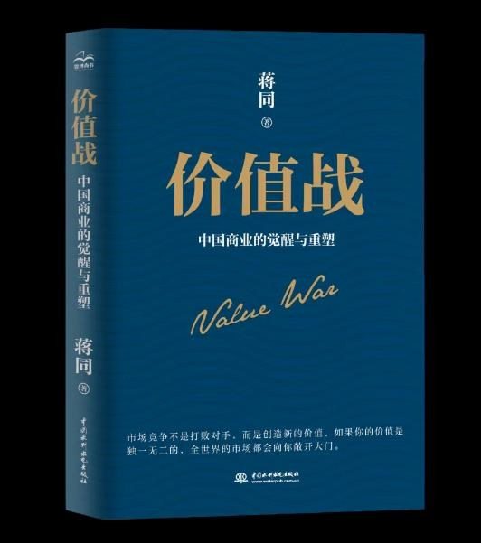
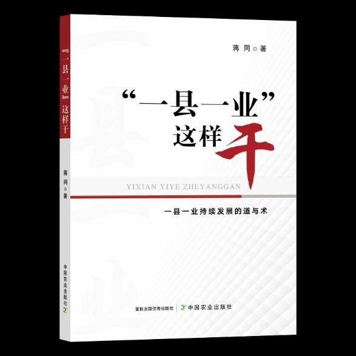
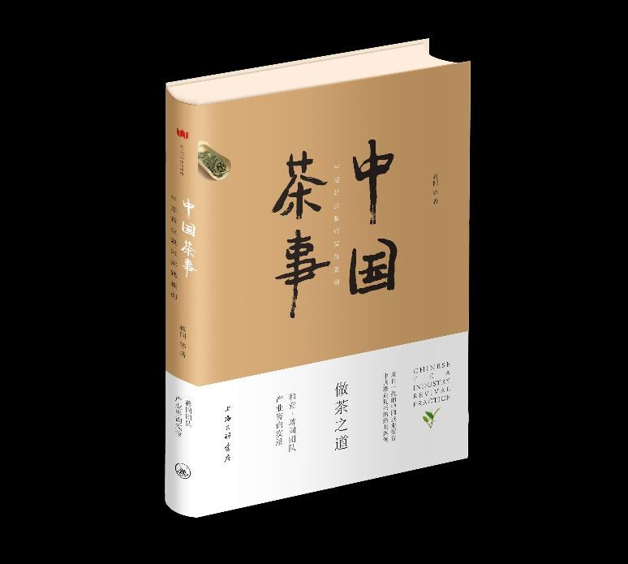

《价值战》
以普洱茶、胖东来、大疆和贵州村超等案例，讨论如何用独特价值应对同质化竞争。
Approach
蒋同在长期咨询实践中提出的商业竞争理论与方法。帮助企业和地方政府发现独特价值，把它落实到产品、品牌和经营中。
用独特价值
赢得市场。
Selected cases
按领域筛选，点击查看项目的客户问题、关键判断、核心工作和成果。
Publications

以普洱茶、胖东来、大疆和贵州村超等案例，讨论如何用独特价值应对同质化竞争。

从沙县小吃、安吉白茶、潜江小龙虾等案例，讨论县域特色产业的发展路径。

以八马茶业、白沙溪、泾阳茯茶等案例，讨论中国茶的产品、品牌与产业发展。
Jiang Tong & Team
蒋同领衔，团队覆盖战略与品牌、区域产业、商业模式、资本运营及组织管理等领域，依托和君集团开展专业协作。
中国农影村村播工程联盟副理事长、中华茶人联谊会常务理事、广西财经学院硕士生导师、深圳市现代农业高质量发展专家。曾接受央视、新华社、人民网和广西日报等媒体采访。
需求沟通 → 初步诊断 → 合作签约 → 项目实施。双方共同明确服务范围、项目团队、交付成果和实施计划。